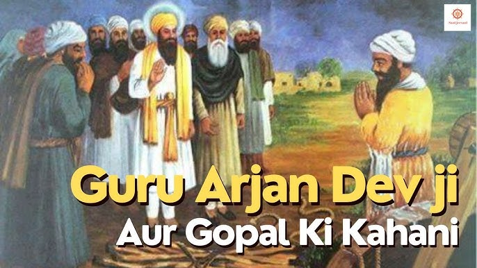

A Story of Pure Devotion and Humility

Bhai Gopal Ji was a devoted Sikh who lived during the time of Guru Arjan Dev Ji. He had deep love and faith in the Guru and served selflessly, never expecting anything in return.
He would clean the shoes of the Sangat, serve water, and participate in Langar daily. Bhai Gopal Ji believed that the smallest act done with love was greater than grand displays without devotion.
Guru Arjan Dev Ji was touched by Gopal Ji's humility and dedication. Once, Guru Ji said, “A heart filled with love and service is the true temple of God.”
One day, Guru Ji called Bhai Gopal Ji and blessed him personally, saying that such devotion inspires the world. Bhai Gopal Ji remained humble and continued his seva with even more love and faith.
“Seva done with humility and love reaches straight to the heart of the Guru.”
Back